This document describes how to use the HTMLDOC software, version 1.9. HTMLDOC converts Hyper-Text Markup Language ("HTML") input files into indexed HTML, Adobe® PostScript®, or Adobe Portable Document Format ("PDF") files.
HTMLDOC supports most HTML 4.01 elements, CSS1 and some CSS2 stylesheet properties, and can generate title, table of contents, and index pages.
HTMLDOC can be used as a standalone application, in a batch document processing environment, or as a web-based report generation application.
No restrictions are placed upon the output produced by HTMLDOC.
HTMLDOC is available both as open source software under the terms of the GNU General Public License version 2 and as commercial software under the terms of a traditional commercial End-User License Agreement.
Like many programs HTMLDOC was developed in response to a need our
company had for generating high-quality documentation in printed and
electronic forms. For a while we used FrameMaker® and a package from sgi
that generated "compiled" Standard Generalized Markup Language ("SGML")
files that could be used by the Electronic
Book Technologies ("EBT") documentation products; EBT was bought by
INSO who was bought by StellentTM who apparently has dropped
the whole product line. When sgi stopped supporting these
tools we turned to INSO, but the cost of their tools is prohibitive to
small businesses.
In the end we decided to write our own program to generate our documentation. HTML seemed to be the source format of choice since WYSIWYG HTML editors are widely (and freely) available and at worst you can use a plain text editor. We needed HTML output for documentation on our web server, PDF for customers to read and/or print from their computers, and PostScript for our own printing needs.
The result of our efforts is the HTMLDOC software which is available for Linux®/UNIX®, MacOS® X, and Microsoft® Windows®. Among other things, this software users manual is produced using HTMLDOC.
This manual is organized into tutorial and reference chapters and appendices:
Limited commercial support is available from Easy Software Products when purchasing the commercial version of HTMLDOC. More information is available at the HTMLDOC web page at the following URL:
http://www.easysw.com/htmldoc/
HTMLDOC includes code to encrypt PDF document files using the RC4 algorithm with up to a 128-bit key. While this software and code may be freely used and exported under current US laws, other countries may restrict your use and possession of this code and software.
The Adobe Portable Document Format is Copyright 1985-2004 by Adobe Systems Incorporated. Adobe, FrameMaker, and PostScript are registered trademarks of Adobe Systems, Incorporated.
The Graphics Interchange Format is the copyright and GIFSM is the service mark property of CompuServe Incorporated.
Intel is a registered trademark of Intel Corporation.
IRIX and sgi are registered trademarks of Silicon
Graphics, Inc.
Linux is a registered trademark of Linus Torvalds.
MacOS is a registered trademark of Apple Computer, Inc.
Microsoft and Windows are registered trademarks of Microsoft Corporation.
Red Hat and RPM are registered trademarks of Red Hat, Inc.
Solaris is a registered trademark of Sun Microsystems, Inc.
SPARC is a registered trademark of SPARC International, Inc.
UNIX is a registered trademark of the X/Open Company, Ltd.
HTMLDOC is the trademark property of Easy Software Products.
HTMLDOC is copyright 1997-2006 by Easy Software Products. See Appendix A - License Agreement for the terms of use.
This software is based in part on the work of the Independent JPEG Group.
This chapter describes the steps needed to install the commercial version of HTMLDOC on your system. If you are installing HTMLDOC from source code, please see Appendix D, Compiling HTMLDOC from Source.
HTMLDOC requires approximately 4MB of disk space and one of the following environments:
HTMLDOC may run on other platforms, however we do not provide packages for platforms other than those listed.
The following instructions describe how to install the HTMLDOC software on your system.
HTMLDOC is provided as a Microsoft installer file under Windows. Insert the CD or double-click on the htmldoc icon in the Explorer window to install HTMLDOC under Windows using the Microsoft software installation wizard (Figure 1-1).
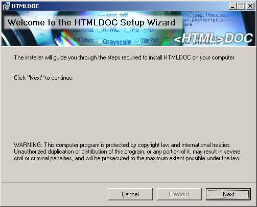
Figure 1-1: The Microsoft software installation wizard
Double-click on the Install icon in the Finder window to start the software installation wizard (Figure 1-2) and follow the installer prompts.
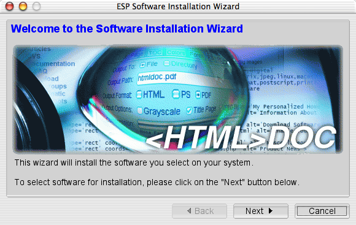
Figure 1-2: The software installation wizard
Double-click on the htmldoc-linux-intel.rpm icon or run the following command to install HTMLDOC on Linux:
rpm -i htmldoc-linux-intel.rpm
Run the following command to install HTMLDOC on Solaris SPARC:
pkgadd -d htmldoc-solaris-sparc.pkg
Run the following command to install HTMLDOC on Solaris Intel:
pkgadd -d htmldoc-solaris-intel.pkg
Before you can use HTMLDOC, you must license it. When you first run HTMLDOC, the license dialog (Figure 1-3) will appear.
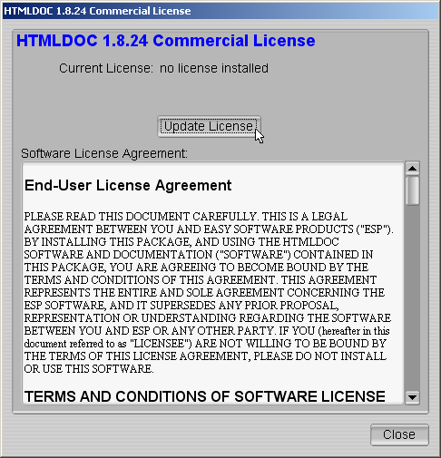
Figure 1-3 - The HTMLDOC License Dialog
Click on the Update License button to show the license manager window (Figure 1-4).
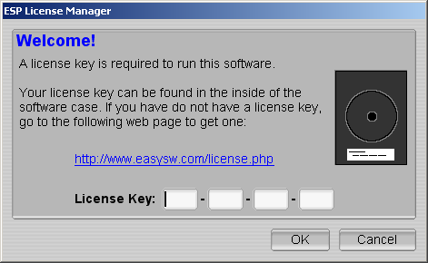
Figure 1-4 - The HTMLDOC License Dialog
Enter the license key that was emailed to you or came on the inside of the HTMLDOC CD-ROM case and click on the OK button. Click on the Close button to start using the software.
The following instructions describe how to remove the HTMLDOC software from your system.
Open the Control Panel window and double-click on the Add/Remove Software icon. When the available software list is displayed, select HTMLDOC and click on the Remove button.
Double-click on the Uninstall icon in the Finder and follow the prompts.
Run the following command to remove HTMLDOC from your Linux system:
rpm -e htmldoc
Run the following command to remove HTMLDOC from Solaris:
pkgrm htmldoc
This chapter describes how to start HTMLDOC and convert HTML files into PostScript and PDF files.
| Note:
HTMLDOC currently does not support HTML
4.0 features such as stylesheets or the |
For Windows click:
Start Menu->All Programs->HTMLDOC->HTMLDOC
For MacOS X click:
Applications Folder->HTMLDOC
For Linux click:
Applications Menu->Office->HTMLDOC
or type:
htmldoc
For Solaris click:
Applications Window->ESP->HTMLDOC
or type:
htmldoc
The HTMLDOC window (Figure 2-1) shows the list of input files that will be converted. Start by clicking on the Web Page radio button (1) to specify that you will be converting a HTML web page file.
Figure 2-1 - The HTMLDOC Window
Then choose a file for conversion by clicking on the Add Files... button (2). When the file chooser dialog appears (Figure 2-2), double-click on the HTML file (3) you wish to convert from the list of files. If you don't see the file you wish to add, then double click on the folder with ../ (4) to see more file options.
Figure 2-2 - The File Chooser Dialog
You've chosen your HTML files to be converted, now you need to save your file(s) somewhere. The output file is where you would do that. Click on the Output tab (5) to set the output file (Figure 2-3). You can either type the name of the output file into the Output Path field or click on the Browse... button (6) to find an acceptable output location. Clicking on browse allows you to put the new file in a specific folder for easy retrieval. When you click on a folder you will notice that the filename area and text is highlighted. Click a few times at the end of the file name path and add a slash (/) and the name of the new file. If you don't see the folder you want to put your document in, double click on the folder with ../ after it.
Figure 2-3 - The Output Tab
You can generate the document by clicking on the Generate button (7) at the bottom of the HTMLDOC window. When the conversion is completed you can open the PDF file that is produced using Adobe Acrobat Reader or any other PDF viewing application.
| Note:
The Open button at the bottom of the HTMLDOC GUI Open Window will not open the generated document for viewing. You will learn about the Open button in later chapters. |
This chapter describes how to create a book using HTML files.
While HTMLDOC can convert web pages into PostScript and PDF files, its real strength is generating indexed HTML, PostScript, or PDF books.
HTMLDOC uses HTML heading elements to
delineate chapters and headings in a book. The H1 element
is used for chapters:
<HTML>
<HEAD>
<TITLE>The Little Computer that Could</TITLE>
</HEAD>
<BODY>
<H1>Chapter 1 - The Little Computer is Born</H1>
...
<H1>Chapter 2 - Little Computer's First Task</H1>
...
</BODY>
</HTML>
Sub-headings are marked using the H2 through H6
elements.
| Note:
When using book mode, HTMLDOC starts
rendering with the first |
Start by clicking on the Book radio button (1) to specify you'll be converting one or more HTML files into a book.
Your next step is to choose one or more files for conversion by clicking on the Add Files... button (2). When the file chooser dialog appears, pick the file(s) you wish to convert and then click on the OK button. As discussed in Chapter 2, if you don't see the file that you want, double click on the folder with ../ after it.
Also, having all files and images in one folder will make file retrieval much easier.
Figure 3-1: The Input Tab
HTMLDOC can automatically create a title page for you. Fill in the Title File/Image field or click the Browse... button (3) to locate the file you want to use. If you don't see the file you want, double click on the folder with ../ after it.
Figure 3-2: The Output Tab
The output format is set in the Output tab (4). Click on the Output tab and then click on the HTML, PS, or PDF radio buttons to set the output format.
Now that you've chosen an output format, type the name of the output file into the Output Path field or click on the Browse... button (5) to select the output file using the file chooser.
Once you have chosen the output file you can generate it by clicking on the Generate button (6) at the bottom of the HTMLDOC window.
HTMLDOC can save the list of HTML
files, the title file, and all other options to a special .BOOK
file so you can regenerate your book when you make changes to your HTML
files.
Click on the Save button (7) to save the current book to a file.
This chapter describes how to use HTMLDOC from the command-line to convert web pages and generate books.
Do the following steps to access the command-line on Windows:
After you have clicked command prompt, your screen should look something like Figure 4-1.
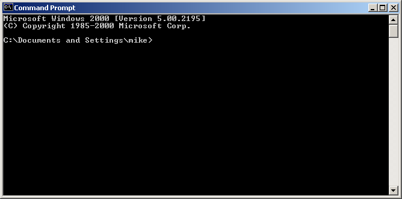
Figure 4-1: Command prompt window
To see what's in this directory, type the following command:
dir ENTER
You now have a list of available files and directories that you can use. To access a different directory simply type cd and the name of the new directory. For example, type the following if you want to access a directory called Steve:
cd Steve
To convert a single web page type:
htmldoc --webpage -f output.pdf filename.html
htmldoc is the name of the software.
--webpage is the document type that specifies unstructured files with page breaks between each file.
-f output.pdf is the file name that you will save all the documents into and also the type of file it is. In this example it is a PDF file.
filename.html is the name of the file that you want to be converted and the type of file it is. In this example it is a HTML file.
Try the following exercise: You want to convert the file myhtml.html into a PDF file. The new file will be called mypdf.pdf. How would you do this? (Don't worry, it's answered for you on the next line. But try first.)
To accomplish this type:
htmldoc --webpage -f mypdf.pdf myhtml.html
To convert more than one web page with page breaks between each HTML file, type:
htmldoc --webpage -f output.pdf file1.html file2.html
All we are doing is adding another file. In this example we are converting two files: file1.html and file2.html.
Try this example: Convert one.html and two.html into a PDF file named 12pdf.pdf. Again, the answer is on the next line.
Your line command should look like this:
htmldoc --webpage -f 12pdf.pdf one.html two.html
We've been using HTML files, but you can also use URLs. For example:
htmldoc --webpage -f output.pdf http://slashdot.org/
Type one of the following commands to generate a book from one or more HTML files:
htmldoc --book -f output.html file1.html file2.html htmldoc --book -f output.pdf file1.html file2.html htmldoc --book -f output.ps file1.html file2.html
htmldoc is the name of the sofware.
--book is a type of document that specifies that the input files are structured with headings.
-f output.html is where you want the converted files to go to. In this case, we requested the file be a HTML file. We could have made it a PDF (-f output.pdf) or Postscript (-f ouput.ps), too.
file1.html and file2.html are the files you want to convert.
HTMLDOC will build a table of contents for the
book using the heading elements (H1, H2,
etc.) in your HTML files. It will also add a title page using the
document TITLE text (you're going to learn about title
files shortly) and other META information you supply in
your HTML files. See Chapter 6 -
HTML Reference for more information on the META
variables that are supported.
| Note:
When using book mode, HTMLDOC starts
rendering with the first |
The --titlefile option sets the
HTML file or image to use on the title page:
htmldoc --titlefile filename.bmp ... htmldoc --titlefile filename.gif ... htmldoc --titlefile filename.jpg ... htmldoc --titlefile filename.png ... htmldoc --titlefile filename.html ...
HTMLDOC supports BMP, GIF, JPEG, and PNG images, as well as generic HTML text you supply for the title page(s).
htmldoc --book -f 12book.pdf 1book.html 2book.html --titlefile bookcover.jpg
Take a look at the entire command line. Dissect the information. Can you see what the new filename is? What are the names of the files being converted? Do you see the titlepage file? What kind of file is your titlefile?
Figure it out? The new file is 12book.pdf. The files converted were 1book.html and 2book.html. A title page was created using the JPEG image file bookcover.jpg.
Chapter 8 - Command Line Reference digs deeper into what you can do with the the command line prompt.
This chapter describes how to interface HTMLDOC to your web server using CGI and your own server-side scripts and programs.
HTMLDOC can be used in a variety of ways to generate formatted reports on a web server. The most common way is to use HTMLDOC as a CGI program with your web server to provide PDF-formatted output of a web page. Examples are provided for Microsoft IIS and the Apache web servers.
HTMLDOC can also be called from your own server-side scripts and programs. Examples are provided for PHP and Java.
| WARNING:
Passing information directly from the web browser to HTMLDOC can potentially expose your system to security risks. Always be sure to "sanitize" any input from the web browser so that filenames, URLs, and options passed to HTMLDOC are not acted on by the shell program or other processes. |
HTMLDOC 1.8.24 and higher supports operation as a CGI program. You can copy or symlink the htmldoc (all but Windows) or htmldoc.exe (Windows) executable to your web server's cgi-bin directory and then use it to produce PDF versions of your web pages.
The CGI converts a page on your local server to PDF and sends it to the client's web browser. For example, to convert a page called superproducts.html at the following URL:
http://servername/superproducts.html
and if you installed HTMLDOC in your server's cgi-bin directory, you would direct your clients to the following URL:
http://servername/cgi-bin/htmldoc/superproducts.html
The boldface portion represents the location of the HTMLDOC executable on the web server. You simply place that path before the page you want to convert.
Form data using the GET method can be passed at the end
of the URL, for example:
http://servername/cgi-bin/htmldoc/superproducts.html?name=value
When run as a CGI program, HTMLDOC will try to read a book file to set any preferences for the conversion to PDF. For the superproducts.html file described previously, HTMLDOC will look at the following URLs for a book file:
http://servername/superproducts.html.book http://servername/.book http://servername/cgi-bin/.book
The first book file that is found will be used.
The Apache web server is easily configured to use HTMLDOC. The simplest way is to copy or symlink the htmldoc executable to the configured cgi-bin directory. For example, if your Apache installation is configured to look for CGI programs in the /var/www/cgi-bin directory, the default for Apache on Red Hat Linux, then the command to install HTMLDOC on your web server would be:
ln -s /usr/bin/htmldoc /var/www/cgi-bin
If you are using Apache 2.0.30 or higher, you will also need to enable PATH_INFO support by adding the following line to your httpd.conf file:
AcceptPathInfo On
Apache also allows you to associate CGI programs with a specific extension. If you add the following line to your httpd.conf file:
AddHandler cgi-script .cgi
and enable CGI execution with the Options directive for a directory:
Options +ExecCGI
then you can copy or symlink the htmldoc executable to an alternate location. For example, if you have a web directory called /var/www/htdocs/products, you can install HTMLDOC in this directory with the following command:
ln -s /usr/bin/htmldoc /var/www/htdocs/products/htmldoc.cgi
The IIS web server is configured to run CGI programs by either modifying the permissions of an existing directory or by creating a new virtual directory that allows for execution of programs. Start by running the Internet Services Manager program (Figure 5-1):
After the Internet Services Manager window (Figure 5-1) appears, perform the following steps to add a virtual folder for HTMLDOC:
If you are using IIS 6.0, proceed to the next section titled, "Additional Configuration for IIS 6.0".
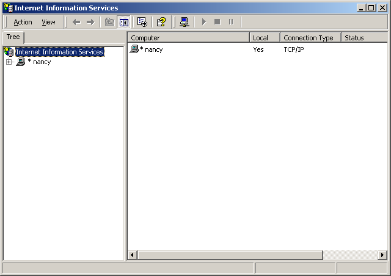
Figure 5-1: The Internet Services Manager Window
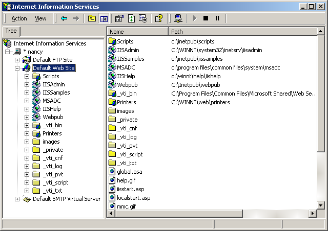
Figure 5-2: The Default Web Site Service
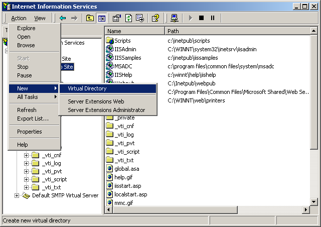
Figure 5-3: Adding a New Virtual Directory
Figure 5-4: The Virtual Directory Creation Wizard Window
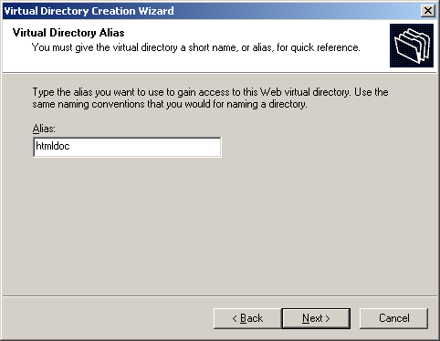
Figure 5-5: Entering the Alias Name
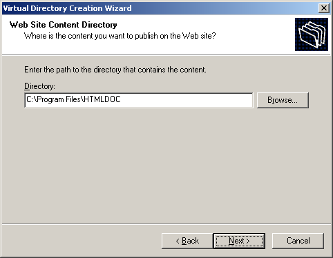
Figure 5-6: Entering the HTMLDOC Program Folder
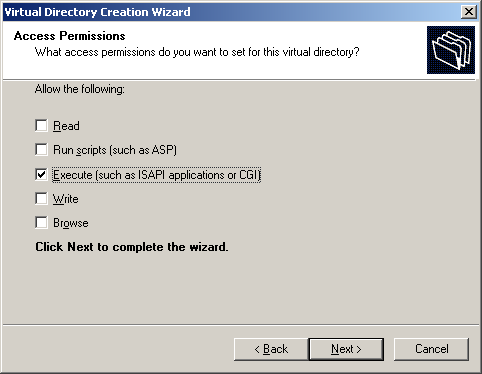
Figure 5-7: Enabling CGI Mode
Figure 5-8: Completion of IIS
Configuration
Once configured, the htmldoc.exe program will be available in the web server directory. For example, for a virtual directory called cgi-bin, the PDF converted URL for the superproducts.html page would be as follows:
http://servername/cgi-bin/htmldoc.exe/superproducts.html
The boldface portion represents the location of the HTMLDOC program on the web server.
IIS 6.0 requires additional configuration steps due to its increased focus on security. Start by running the Internet Services Manager program (Figure 5-1):
After the Internet Services Manager window (Figure 5-1) appears, perform the following steps to add a new Wed Service Extension for HTMLDOC:
Finally, double-click the My Computer icon on the desktop or start the Windows Explorer. When the explorer window appears, perform the following steps to provide write access to the Windows temporary folder:
To make this work the CGI script or program must send the appropriate HTTP attributes, the required empty line to signify the beginning of the document, and then execute the HTMLDOC program to generate the HTML, PostScript, or PDF file as needed. Since HTMLDOC looks for CGI environment variables when it is run, you must also set the HTMLDOC_NOCGI environment variable to a value of 1 before running HTMLDOC from your CGI script or program.
Another way to generate PDF files from your reports is to use HTMLDOC as a "portal" application. When used as a portal, HTMLDOC automatically retrieves the named document or report from your server and passes a PDF version to the web browser. See the next sections for more information.
Shell scripts are probably the easiest to work with, but are normally limited to GET type requests. Here is a script called topdf that acts as a portal, converting the named file to PDF:
#!/bin/sh
#
# Sample "portal" script to convert the named HTML file to PDF on-the-fly.
#
# Usage: http://www.domain.com/path/topdf/path/filename.html
#
#
# Tell HTMLDOC not to run in CGI mode...
#
HTMLDOC_NOCGI=1; export HTMLDOC_NOCGI
#
# The "options" variable contains any options you want to pass to HTMLDOC.
#
options='-t pdf --webpage --header ... --footer ..."
#
# Tell the browser to expect a PDF file...
#
echo "Content-Type: application/pdf"
echo ""
#
# Run HTMLDOC to generate the PDF file...
#
htmldoc $options http://${SERVER_NAME}:${SERVER_PORT}$PATH_INFO
Users of this CGI would reference the URL "http://www.domain.com/topdf.cgi/index.html" to generate a PDF file of the site's home page.
The options variable in the script can be set to use any supported command-line option for HTMLDOC; for a complete list see Chapter 8 - Command-Line Reference.
Perl scripts offer the ability to generate more complex reports, pull data from databases, etc. The easiest way to interface Perl scripts with HTMLDOC is to write a report to a temporary file and then execute HTMLDOC to generate the PDF file.
Here is a simple Perl subroutine that can be used to write a PDF report to the HTTP client:
sub topdf {
# Get the filename argument...
my $filename = shift;
# Make stdout unbuffered...
select(STDOUT); $| = 1;
# Tell HTMLDOC not to run in CGI mode...
$ENV{HTMLDOC_NOCGI} = 1;
# Write the content type to the client...
print "Content-Type: application/pdf\n\n";
# Run HTMLDOC to provide the PDF file to the user...
system "htmldoc -t pdf --quiet --webpage $filename";
}
PHP is quickly becoming the most
popular server-side scripting language available. PHP provides a passthru()
function that can be used to run HTMLDOC. This combined with the header()
function can be used to provide on-the-fly reports in PDF format.
Here is a simple PHP function that can be used to convert a HTML report to PDF and send it to the HTTP client:
function topdf($filename, $options = "") {
# Tell HTMLDOC not to run in CGI mode...
putenv("HTMLDOC_NOCGI=1");
# Write the content type to the client...
header("Content-Type: application/pdf");
flush();
# Run HTMLDOC to provide the PDF file to the user...
passthru("htmldoc -t pdf --quiet --jpeg --webpage $options '$filename'");
}
The function accepts a filename and an optional "options" string for specifying the header, footer, fonts, etc.
To prevent malicious users from passing in unauthorized characters into this function, the following function can be used to verify that the URL/filename does not contain any characters that might be interpreted by the shell:
function bad_url($url) {
// See if the URL starts with http: or https:...
if (strncmp($url, "http://", 7) != 0 &&
strncmp($url, "https://", 8) != 0) {
return 1;
}
// Check for bad characters in the URL...
$len = strlen($url);
for ($i = 0; $i < $len; $i ++) {
if (!strchr("~_*()/:%?+-&@;=,$.", $url[$i]) &&
!ctype_alnum($url[$i])) {
return 1;
}
}
return 0;
}
Another method is to use the escapeshellarg() function
provided with PHP 4.0.3 and higher to
generate a quoted shell argument for HTMLDOC.
To make a "portal" script, add the following code to complete the example:
global $SERVER_NAME;
global $SERVER_PORT;
global $PATH_INFO;
global $QUERY_STRING;
if ($QUERY_STRING != "") {
$url = "http://${SERVER_NAME}:${SERVER_PORT}${PATH_INFO}?${QUERY_STRING}";
} else {
$url = "http://${SERVER_NAME}:${SERVER_PORT}$PATH_INFO";
}
if (bad_url($url)) {
print("<html><head><title>Bad URL</title></head>\n"
."<body><h1>Bad URL</h1>\n"
."<p>The URL <b><tt>$url</tt></b> is bad.</p>\n"
."</body></html>\n");
} else {
topdf($url);
}
C programs offer the best flexibility and easily supports on-the-fly report generation without the need for temporary files.
Here are some simple C functions that can be used to generate a PDF report to the HTTP client from a temporary file or pipe:
#include <stdio.h>
#include <stdlib.h>
/* topdf() - convert a HTML file to PDF */
FILE *topdf(const char *filename) /* I - HTML file to convert */
{
char command[1024]; /* Command to execute */
/*
* Tell HTMLDOC not to run in CGI mode...
*/
putenv("HTMLDOC_NOCGI=1");
/*
* Write the content type to the client...
*/
puts("Content-Type: application/pdf\n");
/*
* Run HTMLDOC to provide the PDF file to the user...
*/
sprintf(command, "htmldoc --quiet -t pdf --webpage %s", filename);
return (popen(command, "w"));
}
/* topdf2() - pipe HTML output to HTMLDOC for conversion to PDF */
FILE *topdf2(void)
{
/*
* Tell HTMLDOC not to run in CGI mode...
*/
putenv("HTMLDOC_NOCGI=1");
/*
* Write the content type to the client...
*/
puts("Content-Type: application/pdf\n");
/*
* Open a pipe to HTMLDOC...
*/
return (popen("htmldoc --quiet -t pdf --webpage -", "w"));
}
Java programs are a portable way to add PDF support to your web server. Here is a class called htmldoc that acts as a portal, converting the named file to PDF. It can also be called by your Java servlets to process an HTML file and send the result to the client in PDF format:
class htmldoc
{
// Convert named file to PDF on stdout...
public static int topdf(String filename)// I - Name of file to convert
{
String command; // Command string
Process process; // Process for HTMLDOC
Runtime runtime; // Local runtime object
java.io.InputStream input; // Output from HTMLDOC
byte buffer []; // Buffer for output data
int bytes; // Number of bytes
// First tell the client that we will be sending PDF...
System.out.print("Content-type: application/pdf\n\n");
// Construct the command string
command = "htmldoc --quiet --jpeg --webpage -t pdf --left 36 " +
"--header .t. --footer .1. " + filename;
// Run the process and wait for it to complete...
runtime = Runtime.getRuntime();
try
{
// Create a new HTMLDOC process...
process = runtime.exec(command);
// Get stdout from the process and a buffer for the data...
input = process.getInputStream();
buffer = new byte[8192];
// Read output from HTMLDOC until we have it all...
while ((bytes = input.read(buffer)) > 0)
System.out.write(buffer, 0, bytes);
// Return the exit status from HTMLDOC...
return (process.waitFor());
}
catch (Exception e)
{
// An error occurred - send it to stderr for the web server...
System.err.print(e.toString() + " caught while running:\n\n");
System.err.print(" " + command + "\n");
return (1);
}
}
// Main entry for htmldoc class
public static void main(String[] args)// I - Command-line args
{
String server_name, // SERVER_NAME env var
server_port, // SERVER_PORT env var
path_info, // PATH_INFO env var
query_string, // QUERY_STRING env var
filename; // File to convert
if ((server_name = System.getProperty("SERVER_NAME")) != null &&
(server_port = System.getProperty("SERVER_PORT")) != null &&
(path_info = System.getProperty("PATH_INFO")) != null)
{
// Construct a URL for the resource specified...
filename = "http://" + server_name + ":" + server_port + path_info;
if ((query_string = System.getProperty("QUERY_STRING")) != null)
{
filename = filename + "?" + query_string;
}
}
else if (args.length == 1)
{
// Pull the filename from the command-line...
filename = args[0];
}
else
{
// Error - no args or env variables!
System.err.print("Usage: htmldoc.class filename\n");
return;
}
// Convert the file to PDF and send to the web client...
topdf(filename);
}
}
There are two types of HTML files - structured documents using headings (H1, H2, etc.) which HTMLDOC calls "books", and unstructured documents that do not use headings which HTMLDOC calls "web pages".
A very common mistake is to try converting a web page using:
htmldoc -f filename.pdf filename.html
which will likely produce a PDF file
with no pages. To convert web page files you must use the --webpage
option at the command-line or choose Web Page in the input
tab of the GUI.
| Note:
HTMLDOC does not support HTML 4.0 elements, attributes, stylesheets, or scripting. |
The following HTML elements are recognized by HTMLDOC:
| Element | Version | Supported? | Notes |
|---|---|---|---|
| !DOCTYPE | 3.0 | Yes | DTD is ignored |
| A | 1.0 | Yes | See Below |
| ACRONYM | 2.0 | Yes | No font change |
| ADDRESS | 2.0 | Yes | |
| AREA | 2.0 | No | |
| B | 1.0 | Yes | |
| BASE | 2.0 | No | |
| BASEFONT | 1.0 | No | |
| BIG | 2.0 | Yes | |
| BLINK | 2.0 | No | |
| BLOCKQUOTE | 2.0 | Yes | |
| BODY | 1.0 | Yes | |
| BR | 2.0 | Yes | |
| CAPTION | 2.0 | Yes | |
| CENTER | 2.0 | Yes | |
| CITE | 2.0 | Yes | Italic/Oblique |
| CODE | 2.0 | Yes | Courier |
| DD | 2.0 | Yes | |
| DEL | 2.0 | Yes | Strikethrough |
| DFN | 2.0 | Yes | Helvetica |
| DIR | 2.0 | Yes | |
| DIV | 3.2 | Yes | |
| DL | 2.0 | Yes | |
| DT | 2.0 | Yes | Italic/Oblique |
| EM | 2.0 | Yes | Italic/Oblique |
| EMBED | 2.0 | Yes | HTML Only |
| FONT | 2.0 | Yes | See Below |
| FORM | 2.0 | No | |
| FRAME | 3.2 | No | |
| Element | Version | Supported? | Notes |
| FRAMESET | 3.2 | No | |
| H1 | 1.0 | Yes | Boldface, See Below |
| H2 | 1.0 | Yes | Boldface, See Below |
| H3 | 1.0 | Yes | Boldface, See Below |
| H4 | 1.0 | Yes | Boldface, See Below |
| H5 | 1.0 | Yes | Boldface, See Below |
| H6 | 1.0 | Yes | Boldface, See Below |
| HEAD | 1.0 | Yes | |
| HR | 1.0 | Yes | See Below |
| HTML | 1.0 | Yes | |
| I | 1.0 | Yes | |
| IMG | 1.0 | Yes | See Below |
| INPUT | 2.0 | No | |
| INS | 2.0 | Yes | Underline |
| ISINDEX | 2.0 | No | |
| KBD | 2.0 | Yes | Courier Bold |
| LI | 2.0 | Yes | |
| LINK | 2.0 | No | |
| MAP | 2.0 | No | |
| MENU | 2.0 | Yes | |
| META | 2.0 | Yes | See Below |
| MULTICOL | N3.0 | No | |
| NOBR | 1.0 | No | |
| NOFRAMES | 3.2 | No | |
| OL | 2.0 | Yes | |
| OPTION | 2.0 | No | |
| P | 1.0 | Yes | |
| PRE | 1.0 | Yes | |
| S | 2.0 | Yes | Strikethrough |
| SAMP | 2.0 | Yes | Courier |
| SCRIPT | 2.0 | No | |
| Element | Version | Supported? | Notes |
| SELECT | 2.0 | No | |
| SMALL | 2.0 | Yes | |
| SPACER | N3.0 | Yes | |
| STRIKE | 2.0 | Yes | |
| STRONG | 2.0 | Yes | Boldface Italic/Oblique |
| SUB | 2.0 | Yes | Reduced Fontsize |
| SUP | 2.0 | Yes | Reduced Fontsize |
| TABLE | 2.0 | Yes | See Below |
| TD | 2.0 | Yes | |
| TEXTAREA | 2.0 | No | |
| TH | 2.0 | Yes | Boldface Center |
| TITLE | 2.0 | Yes | |
| TR | 2.0 | Yes | |
| TT | 2.0 | Yes | Courier |
| U | 1.0 | Yes | |
| UL | 2.0 | Yes | |
| VAR | 2.0 | Yes | Helvetica Oblique |
| WBR | 1.0 | No |
HTMLDOC supports many special HTML comments to initiate page breaks, set the header and footer text, and control the current media options:
<!-- FOOTER LEFT "foo" --><!-- FOOTER CENTER "foo" --><!-- FOOTER RIGHT "foo" --><!-- HALF PAGE --><!-- HEADER LEFT "foo" --><!-- HEADER CENTER "foo" --><!-- HEADER RIGHT "foo" --><!-- MEDIA BOTTOM nnn --><!-- MEDIA COLOR "foo" --><!-- MEDIA DUPLEX NO --><!-- MEDIA DUPLEX YES --><!-- MEDIA LANDSCAPE NO --><!-- MEDIA LANDSCAPE YES --><!-- MEDIA LEFT nnn --><!-- MEDIA POSITION nnn --><!-- MEDIA RIGHT nnn --><!-- MEDIA SIZE foo --><!-- MEDIA TOP nnn --><!-- MEDIA TYPE "foo" --><!-- NEED length -->length units left on the
current page. The length value defaults to lines of text
but can be suffixed by in, mm, or cm
to convert from the corresponding units.
<!-- NEW PAGE --><!-- NEW SHEET --><!-- NUMBER-UP nn --><!-- PAGE BREAK -->The HEADER and FOOTER comments allow you to
set an arbitrary string of text for the left, center, and right headers
and footers. Each string consists of plain text; special values or
strings can be inserted using the dollar sign ($):
$$$CHAPTER$CHAPTERPAGE$CHAPTERPAGE(format)$CHAPTERPAGES$CHAPTERPAGES(format)$DATE$HEADING$LOGOIMAGE$PAGE$PAGE(format)$PAGES$PAGES(format)$TIME$TITLELimited typeface specification is currently supported to ensure portability across platforms and for older PostScript printers:
| Requested Font | Actual Font |
|---|---|
| Arial | Helvetica |
| Courier | Courier |
| Dingbats | Dingbats |
| Helvetica | Helvetica |
| Monospace | DejaVu Sans Mono |
| Sans | DejaVu Sans |
| Serif | DejaVu Serif |
| Symbol | Symbol |
| Times | Times |
All other unrecognized typefaces are silently ignored.
Currently HTMLDOC supports a maximum of 1000 chapters (H1 headings).
This limit can be increased by changing the MAX_CHAPTERS
constant in the config.h file included with the source code.
All chapters start with a top-level heading (H1) markup. Any headings within a chapter must be of a lower level (H2 to H15). Each chapter starts a new page or the next odd-numbered page if duplexing is selected.
| Note:
Heading levels 7 to 15 are not standard HTML and will not likely be recognized by most web browsers. |
The headings you use within a chapter must start at level 2 (H2). If you skip levels the heading will be shown under the last level that was known. For example, if you use the following hierarchy of headings:
<H1>Chapter Heading</H1> ... <H2>Section Heading 1</H2> ... <H2>Section Heading 2</H2> ... <H3>Sub-Section Heading 1</H3> ... <H4>Sub-Sub-Section Heading 1</H4> ... <H4>Sub-Sub-Section Heading 2</H4> ... <H3>Sub-Section Heading 2</H3> ... <H2>Section Heading 3</H2> ... <H4>Sub-Sub-Section Heading 3</H4> ...the table-of-contents that is generated will show:
VALUE="#"TYPE="1"TYPE="a"TYPE="A"TYPE="i"TYPE="I"External URL and internal (#target and filename.html)
links are fully supported for HTML and
PDF output.
When generating PDF files, local PDF file links will be converted to external file links for the PDF viewer instead of URL links. That is, you can directly link to another local PDF file from your HTML document with:
<A HREF="filename.pdf">...</A>
HTMLDOC supports the following META attributes for the
title page and document information:
<META NAME="AUTHOR" CONTENT="..."<META NAME="COPYRIGHT" CONTENT="..."<META NAME="DOCNUMBER" CONTENT="..."<META NAME="GENERATOR" CONTENT="..."<META NAME="KEYWORDS" CONTENT="..."<META NAME="SUBJECT" CONTENT="..."BREAK
attribute is still supported by the HR element:
<HR BREAK>Support for the
BREAK attribute is deprecated and will be
removed in a future release of HTMLDOC.
MAX_COLUMNS
constant in the config.h file included with the source code.
HTMLDOC does not support HTML 4.0
table elements or attributes, such as TBODY, THEAD,
TFOOT, or RULES.
.BOOK files. The buttons on the bottom of
the HTMLDOC window allow you to manage these files and generate
formatted documents.
Note: Saving a document is not the same as generating a document. The book files saved to disk by the Save and Save As... buttons are not the final HTML, PDF, or PostScript output files. You generate those files by clicking on the Generate button.
Note: Saving a document is not the same as generating a document. The book files saved to disk by the Save and Save As... buttons are not the final HTML, PDF, or PostScript output files. You generate those files by clicking on the Generate button.
Note: Generating a document is not the same as saving a document. To save the current HTML files and settings in the HTMLDOC GUI, click on the Save or Save As... buttons instead.
Figure 7-1 - The Input Tab
The Delete Files button only removes the files from the Input Files list. The files are not removed from disk.
Click on the Browse... button to select a logo image file using the file chooser dialog.
Click on the Browse... button to select a title file using the file chooser dialog.
Figure 7-2 - The Output Tab
Directory output is not available when generating PDF files.
Note: HTMLDOC uses Flate compression, which is not encumbered by patents and is also used by the popular PKZIP and gzip programs. Flate is a lossless compression algorithm (that is, you get back exactly what you put in) that performs very well on indexed images and text.
Figure 7-3 - The Page Tab
HTMLDOC supports the following standard page size names:
Click in the Page Size field and enter the page width and length separated by the letter "x" to select a custom page size. Append the letters "in" for inches, "mm" for millimeters, or "cm" for centimeters.
Select the desired text in each of the option buttons to customize the header and footer for the document/body pages. The left-most option buttons set the text that is left-justified, while the middle buttons set the text that is centered and the right buttons set the text that is right-justified. Each choice corresponds to the following text:
| Choice | Description |
|---|---|
| Blank | The field should be blank. |
| Title | The field should contain the document title. |
| Chapter Title | The field should contain the current chapter title. |
| Heading | The field should contain the current heading. |
| Logo | The field should contain the logo image. |
| 1,2,3,... | The field should contain the current page number in decimal format (1, 2, 3, ...) |
| i,ii,iii,... | The field should contain the current page number in lowercase roman numerals (i, ii, iii, ...) |
| I,II,III,... | The field should contain the current page number in uppercase roman numerals (I, II, III, ...) |
| a,b,c,... | The field should contain the current page number using lowercase letters. |
| A,B,C,... | The field should contain the current page number using UPPERCASE letters. |
| Chapter Page | The field should contain the current chapter page number. |
| 1/N,2/N,... | The field should contain the current and total number of pages (n/N). |
| 1/C,2/C,... | The field should contain the current and total number of pages in the chapter (n/N). |
| Date | The field should contain the current date (formatted for the current locale). |
| Time | The field should contain the current time (formatted for the current locale). |
| Date + Time | The field should contain the current date and time (formatted for the current locale). |
Figure 7-4 - The TOC Tab
Figure 7-5 - The Colors Tab
#RRGGBB. Click on the
Lookup... button to pick the color graphically.
#RRGGBB. Click on the
Lookup... button to pick the color graphically.
#RRGGBB. Click on the
Lookup... button to pick the color graphically.
Figure 7-6 - The Fonts Tab
The Embed Fonts check box controls whether or not fonts are embedded in PostScript and PDF output.
Figure 7-7 - The PS Tab
PostScript Level 2 is compatible with most PostScript printers and supports printer commands and JPEG image compression.
PostScript Level 3 is compatible with only the newest PostScript printers and supports Flate image compression in addition to the Level 2 features.
setpagedevice
commands for the page size and duplex settings. Click in the check box
to enable or disable printer commands.
Printer commands are only available with Level 2 and 3 output and may not work with some printers.
The Include Xerox Job Comments check box controls whether or not the output files contain Xerox job comments. Click in the check box to enable or disable the job comments.
Job comments are available with all levels of PostScript output.
Figure 7-8 - The PDF Tab
The Document page mode displays only the document pages. The Outline page mode displays the table-of-contents outline as well as the document pages. The Full-Screen page mode displays the document pages on the whole screen; this mode is used primarily for presentations.
The Single page layout displays a single page at a time. The One Column page layout displays a single column of pages at a time. The Two Column Left and Two Column Right page layouts display two columns of pages at a time; the first page is displayed in the left or right column as selected.
Figure 7-9 - The Security Tab
The security tab (Figure 7-9) allows you to enable PDF document encryption and security features.
The Encryption buttons control whether or not encryption is performed on the PDF file. Encrypted documents can be password protected and also provide user permissions.
The Permissions buttons control what operations are allowed by the PDF viewer.
The Owner Password field contains the document owner password, a string that is used by Adobe Acrobat to control who can change document permissions, etc.
If this field is left blank, a random 32-character password is generated so that no one can change the document using the Adobe tools.
The Include Links option controls whether or not the internal links in a document are included in the PDF output. The document outline (shown to the left of the document in Acrobat Reader) is unaffected by this setting.
The User Password field contains the document user password, a string that is used by Adobe Acrobat to restrict viewing permissions on the file.
If this field is left blank, any user may view the document without entering a password.
Figure 7-10 - The Options Tab
The options tab (Figure 7-10) contains the HTML file editor of your choice and allows you to save the settings and options that will be used in new documents.
The HTML Editor field contains the name of the HTML editor to run when you double-click on an input file or click on the Edit Files... button. Enter the program name in the field or click on the Browse... button to select the editor using the file chooser.
The %s is added automatically to the end of the command
name to insert the name of the file to be edited. If you are using
Netscape Composer to edit your HTML files
you should put "-edit" before the %s to tell Netscape to
edit the file and not display it.
The Browser Width slider specifies the width of the browser in pixels that is used to scale images and other pixel measurements to the printable page width. You can adjust this value to more closely match the formatting on the screen.
The default browser width is 680 pixels which corresponds roughly to a 96 DPI display. The browser width is only used when generating PostScript or PDF files.
The Search Path field specifies a search path for files that are loaded by HTMLDOC. It is usually used to get images that use absolute server paths to load.
Directories are separated by the semicolon (;) so that drive letters (and eventually URLs) can be specified.
The Proxy URL field specifies a URL for a HTTP proxy server.
The Tooltips check button controls the appearance of tooltip windows over GUI controls.
The Modern Look check button controls the appearance of the GUI controls.
The Strict HTML check button controls strict HTML conformance checking. When checked, HTML elements that are improperly nested and dangling close elements will produce error messages.
The Save Options and Defaults button saves the HTML editor and all of the document settings on the other tabs for use in new documents. These settings are also used by the command-line version of HTMLDOC.
Figure 7-11 - The File Chooser
The file chooser (Figure 7-11) allows you to select one or more files and create files and directories.
The Show option button (1) selects which files are displayed in the file list (3). Click on the option button to choose a different type of file.
The Favorites button (2) allow you to view a specific directory or add the current directory to your list of favorites.
The file list (3) lists the files and directories in the current directory or folder. Double-click on a file or directory to select that file or directory. Drag the mouse or hold the CTRL key down while clicking to select multiple files.
The Filename field contains the currently selected filename. Type a name in the field to select a file or directory. As you type, any matching filenames will be highlighted; press the TAB key to accept the matches.
The button bar along the top of the filename allows you to view each directory in the filename. Click on any of the segments to display the corresponding directory.
The dialog buttons (5) close the file chooser dialog window. Click on the OK button to accept your selections or the Cancel button to reject your selections and cancel the file operation.
This chapter describes all of the command-line options supported by HTMLDOC.
The basic command-line usage for HTMLDOC is:
htmldoc options filename1.html ... filenameN.html htmldoc options filename.book
The first form converts the named HTML
files to the specified output format immediately. The second form loads
the specified .book file and displays the HTMLDOC window,
allowing a user to make changes and/or generate the document
interactively.
If no output file or directory is specified, then all output is sent to the standard output file.
On return, HTMLDOC returns and exit code of 0 if it was successful and non-zero if there were errors.
The following command-line options are recognized by HTMLDOC.
The -d option specifies an output directory for the
document files.
This option is not compatible with the PDF output format.
The -f option specifies an
output file for the document.
The -t option specifies the output format for the
document and can be one of the following:
| Format | Description |
|---|---|
| html | Generate one or more indexed HTML files. |
| htmlsep | Generate separate HTML files for each heading in the table-of-contents. |
| Generate a PDF file (default version - 1.3). | |
| pdf11 | Generate a PDF 1.1 file for Acrobat Reader 2.0. |
| pdf12 | Generate a PDF 1.2 file for Acrobat Reader 3.0. |
| pdf13 | Generate a PDF 1.3 file for Acrobat Reader 4.0. |
| pdf14 | Generate a PDF 1.4 file for Acrobat Reader 5.0. |
| ps | Generate one or more PostScript files (default level - 2). |
| ps1 | Generate one or more Level 1 PostScript files. |
| ps2 | Generate one or more Level 2 PostScript files. |
| ps3 | Generate one or more Level 3 PostScript files. |
The -v option specifies that progress information should
be sent/displayed to the standard error file.
The --batch option specifies a
book file that you would like to generate without the GUI popping
up. This option can be combined with other options to generate the same
book in different formats and sizes:
htmldoc --batch filename.book -f filename.ps htmldoc --batch filename.book -f filename.pdf
The --bodycolor option specifies the background color
for all pages in the document. The color can be specified by a standard HTML color name or as a 6-digit hexadecimal
number of the form #RRGGBB.
The --bodyfont option specifies the default text font
used for text in the document body. The typeface parameter
can be one of the following:
| typeface | Actual Font |
|---|---|
| Arial | Helvetica |
| Courier | Courier |
| Helvetica | Helvetica |
| Monospace | DejaVu Sans Mono |
| Sans | DevaVu Sans |
| Serif | DejaVu Serif |
| Times | Times |
The --bodyimage option specifies the background image
for all pages in the document. The supported formats are BMP, GIF,
JPEG, and PNG.
The --book option
specifies that the input files comprise a book with chapters and
headings.
The --bottom option specifies the bottom margin. The
default units are points (1 point = 1/72nd inch); the suffixes "in",
"cm", and "mm" specify inches, centimeters, and millimeters,
respectively.
This option is only available when generating PostScript or PDF files.
The --browserwidth option specifies the browser width in
pixels. The browser width is used to scale images and pixel
measurements when generating PostScript
and PDF files. It does not affect the font size of text.
The default browser width is 680 pixels which corresponds roughly to a 96 DPI display. Please note that your images and table sizes are equal to or smaller than the browser width, or your output will overlap or truncate in places.
The --charset option specifies the 8-bit character set
encoding to use for the entire document. HTMLDOC comes with the
following character set files:
| charset | Character Set |
|---|---|
| cp-874 | Windows code page 874 |
| cp-1250 | Windows code page 1250 |
| cp-1251 | Windows code page 1251 |
| cp-1252 | Windows code page 1252 |
| cp-1253 | Windows code page 1253 |
| cp-1254 | Windows code page 1254 |
| cp-1255 | Windows code page 1255 |
| cp-1256 | Windows code page 1256 |
| cp-1257 | Windows code page 1257 |
| cp-1258 | Windows code page 1258 |
| iso-8859-1 | ISO-8859-1 |
| iso-8859-2 | ISO-8859-2 |
| iso-8859-3 | ISO-8859-3 |
| iso-8859-4 | ISO-8859-4 |
| iso-8859-5 | ISO-8859-5 |
| iso-8859-6 | ISO-8859-6 |
| iso-8859-7 | ISO-8859-7 |
| iso-8859-8 | ISO-8859-8 |
| iso-8859-9 | ISO-8859-9 |
| iso-8859-14 | ISO-8859-14 |
| iso-8859-15 | ISO-8859-15 |
| koi8-r | KOI8-R |
| utf-8 | Unicode (UTF-8) |
The --color option specifies that color output is
desired.
This option is only available when generating PostScript or PDF files.
The --compression option specifies that Flate
compression should be performed on the output
file(s). The optional level parameter is a number from 1
(fastest and least amount of compression) to 9 (slowest and most amount
of compression).
This option is only available when generating PDF or Level 3 PostScript files.
The --continuous option specifies that the input files
comprise a web page (or site) and that no title page or
table-of-contents should be generated. Unlike the --webpage
option described later in this chapter, page breaks are not inserted
between each input file.
This option is only available when generating PostScript or PDF files.
The --cookies option specifies one or more HTTP cookies
that should be sent when converting remote URLs. Each cookie must be
separated from the others by a semicolon and a space, and values
containing whitespace or the semicolon must be placed inside
double-quotes. When specifying multiple cookies, the entire cookie
string must be surrounded by single quotes in order for the string to
be processed correctly.
The --datadir option specifies the location of data
files used by HTMLDOC.
The --duplex option specifies that the output should be
formatted for two sided printing.
This option is only available when generating
PostScript or PDF files. Use the --pscommands option
to generate PostScript duplex mode commands.
The --effectduration option specifies the duration of a
page transition effect in seconds.
This option is only available when generating PDF files.
The --embedfonts option specifies that fonts should be
embedded in PostScript and PDF output.
This is especially useful when generating documents in character sets
other than ISO-8859-1.
The --encryption option enables
encryption and security features for PDF output.
This option is only available when generating PDF files.
The --firstpage option specifies the first page that
will be displayed in a PDF file. The page
parameter can be one of the following:
| page | Description |
|---|---|
| p1 | The first page of the document. |
| toc | The first page of the table-of-contents. |
| c1 | The first page of chapter 1. |
This option is only available when generating PDF files.
The --fontsize option specifies the base font size for
the entire document in points (1 point = 1/72nd inch).
The --fontspacing option specifies the line spacing for
the entire document as a multiplier of the base font size. A spacing
value of 1 makes each line of text the same height as the font.
The --footer option specifies the contents of the page
footer. The lcr parameter is a three-character string
representing the left, center, and right footer fields. Each character
can be one of the following:
| lcr | Description |
|---|---|
| . | A period indicates that the field should be blank. |
| : | A colon indicates that the field should contain the current and total number of pages in the chapter (n/N). |
| / | A slash indicates that the field should contain the current and total number of pages (n/N). |
| 1 | The number 1 indicates that the field should contain the current page number in decimal format (1, 2, 3, ...) |
| a | A lowercase "a" indicates that the field should contain the current page number using lowercase letters. |
| A | An uppercase "A" indicates that the field should contain the current page number using UPPERCASE letters. |
| c | A lowercase "c" indicates that the field should contain the current chapter title. |
| C | An uppercase "C" indicates that the field should contain the current chapter page number. |
| d | A lowercase "d" indicates that the field should contain the current date. |
| D | An uppercase "D" indicates that the field should contain the current date and time. |
| h | An "h" indicates that the field should contain the current heading. |
| i | A lowercase "i" indicates that the field should contain the current page number in lowercase roman numerals (i, ii, iii, ...) |
| I | An uppercase "I" indicates that the field should contain the current page number in uppercase roman numerals (I, II, III, ...) |
| l | A lowercase "l" indicates that the field should contain the logo image. |
| t | A lowercase "t" indicates that the field should contain the document title. |
| T | An uppercase "T" indicates that the field should contain the current time. |
Setting the footer to "..." disables the footer
entirely.
The --format option specifies the output format for the
document and can be one of the following:
| Format | Description |
|---|---|
| html | Generate one or more indexed HTML files. |
| htmlsep | Generate separate HTML files for each heading in the table-of-contents. |
| Generate a PDF file (default version - 1.3). | |
| pdf11 | Generate a PDF 1.1 file for Acrobat Reader 2.0. |
| pdf12 | Generate a PDF 1.2 file for Acrobat Reader 3.0. |
| pdf13 | Generate a PDF 1.3 file for Acrobat Reader 4.0. |
| pdf14 | Generate a PDF 1.4 file for Acrobat Reader 5.0. |
| ps | Generate one or more PostScript files (default level - 2). |
| ps1 | Generate one or more Level 1 PostScript files. |
| ps2 | Generate one or more Level 2 PostScript files. |
| ps3 | Generate one or more Level 3 PostScript files. |
The --gray option specifies that grayscale output is
desired.
This option is only available when generating PostScript or PDF files.
The --header option specifies the contents of the page
header. The lcr parameter is a three-character string
representing the left, center, and right header fields. See the
--footer option for the list of formatting characters.
Setting the header to "..." disables the header
entirely.
The --headfootfont option specifies the font that is
used for the header and footer text. The font parameter
can be one of the following:
This option is only available when generating PostScript or PDF files.
The --headfootsize option sets the size of the header
and footer text in points (1 point = 1/72nd inch).
This option is only available when generating PostScript or PDF files.
The --headingfont options sets the typeface that is used
for headings in the document. The typeface parameter can
be one of the following:
| typeface | Actual Font |
|---|---|
| Arial | Helvetica |
| Courier | Courier |
| Helvetica | Helvetica |
| Monospace | DejaVu Sans Mono |
| Sans | DevaVu Sans |
| Serif | DejaVu Serif |
| Times | Times |
The --help option displays all of the available options
to the standard output file.
The --helpdir option specifies the location of the
on-line help files.
The --jpeg option enables JPEG compression of
continuous-tone images. The optional quality parameter
specifies the output quality from 0 (worst) to 100 (best).
This option is only available when generating PDF or Level 2 and Level 3 PostScript files.
The --landscape option specifies that the output should
be in landscape orientation (long edge on top).
This option is only available when generating PostScript or PDF files.
The --left option specifies the left margin. The default
units are points (1 point = 1/72nd inch); the suffixes "in", "cm", and
"mm" specify inches, centimeters, and millimeters, respectively.
This option is only available when generating PostScript or PDF files.
The --linkcolor option specifies the color of links in
HTML and PDF output. The color can be specified by name or as a
6-digit hexadecimal number of the form #RRGGBB.
The --links option specifies that
PDF output should contain hyperlinks.
The --linkstyle option specifies the
style of links in HTML and PDF output. The style can be "plain" for
no decoration or "underline" to underline links.
The --logoimage option specifies the logo image for the HTML navigation bar and page headers and
footers for PostScript and PDF files. The supported formats are BMP,
GIF, JPEG, and PNG.
| Note:
You need to use the The following example uses the
htmldoc --logoimage image.png --header lt. -f file.pdf file.html
|
The --no-compression option specifies that Flate
compression should not be performed on the output files.
The --no-duplex option specifies that the output should
be formatted for one sided printing.
This option is only available when generating
PostScript or PDF files. Use the --pscommands option
to generate PostScript duplex mode commands.
The --no-embedfonts option specifies that fonts should
not be embedded in PostScript and PDF
output.
The --no-encryption option specifies that no
encryption/security features should be enabled in PDF output.
This option is only available when generating PDF files.
The --no-jpeg option specifies that JPEG compression
should not be performed on large images.
The --no-links option specifies that
PDF output should not contain hyperlinks.
The --no-localfiles option disables access to local
files on the system. This option should be used when providing remote
document conversion services.
The --no-numbered option specifies that headings should
not be numbered.
The --no-pscommands option specifies that
PostScript device commands should not be written to the output
files.
The --no-strict option turns off strict
HTML conformance checking.
The --no-title option specifies that the title page
should not be generated.
The --no-toc option specifies that the table-of-contents
pages should not be generated.
The --no-xrxcomments option specifies that Xerox
PostScript job comments should not be written to the output files.
This option is only available when generating PostScript files.
The --numbered option specifies that headings should be
numbered.
The --nup option sets the number of pages that are
placed on each output page. Valid values for the pages
parameter are 1, 2, 4, 6, 9, and 16.
The --outdir option specifies an output directory for
the document files.
This option is not compatible with the PDF output format.
The --outfile option specifies an
output file for the document.
The --owner-password option specifies the owner password
for a PDF file. If not specified or the
empty string (""), a random password is generated.
This option is only available when generating PDF files.
The --pageduration option specifies the number of
seconds that each page will be displayed in the document.
This option is only available when generating PDF files.
The --pageeffect option specifies the page effect to use
in PDF files. The effect
parameter can be one of the following:
| effect | Description |
|---|---|
| none | No effect is generated. |
| bi | Box Inward |
| bo | Box Outward |
| d | Dissolve |
| gd | Glitter Down |
| gdr | Glitter Down and Right |
| gr | Glitter Right |
| hb | Horizontal Blinds |
| hsi | Horizontal Sweet Inward |
| hso | Horizontal Sweep Outward |
| vb | Vertical Blinds |
| vsi | Vertical Sweep Inward |
| vso | Vertical Sweep Outward |
| wd | Wipe Down |
| wl | Wipe Left |
| wr | Wipe Right |
| wu | Wipe Up |
This option is only available when generating PDF files.
The --pagelayout option specifies the initial page
layout in the PDF viewer. The layout
parameter can be one of the following:
| layout | Description |
|---|---|
| single | A single page is displayed. |
| one | A single column is displayed. |
| twoleft | Two columns are displayed with the first page on the left. |
| tworight | Two columns are displayed with the first page on the right. |
This option is only available when generating PDF files.
The --pagemode option specifies the initial viewing mode
in the PDF viewer. The mode
parameter can be one of the following:
| mode | Description |
|---|---|
| document | The document pages are displayed in a normal window. |
| outline | The document outline and pages are displayed. |
| fullscreen | The document pages are displayed on the entire screen in "slideshow" mode. |
This option is only available when generating PDF files.
The --path option specifies a search path for files that
are loaded by HTMLDOC. It is usually used to get images that use
absolute server paths to load.
Directories are separated by the semicolon (;) so that drive letters and URLs can be specified. Quotes around the directory parameter are optional. They are usually used when the directory string contains spaces.
--path "dir1;dir2;dir3;...;dirN"
The --permissions option specifies the document
permissions. The available permission parameters are listed below:
| Permission | Description |
|---|---|
| all | All permissions |
| annotate | User can annotate document |
| copy | User can copy text and images from document |
| modify | User can modify document |
| User can print document | |
| no-annotate | User cannot annotate document |
| no-copy | User cannot copy text and images from document |
| no-modify | User cannot modify document |
| no-print | User cannot print document |
| none | No permissions |
The --encryption option must be used in conjunction with
the --permissions parameter.
--permissions no-print --encryption
Multiple options can be specified by separating them with commas:
--permissions no-print,no-copy --encryption
This option is only available when generating PDF files.
The --portrait option specifies that the output should
be in portrait orientation (short edge on top).
This option is only available when generating PostScript or PDF files.
The --pscommands option specifies that
PostScript device commands should be written to the output files.
This option is only available when generating Level 2 and Level 3 PostScript files.
The --quiet option prevents error messages from being
sent to stderr.
The --referer option sets the URL that is passed in the Referer:
field of HTTP requests.
The --right option specifies the right margin. The
default units are points (1 point = 1/72nd inch); the suffixes "in",
"cm", and "mm" specify inches, centimeters, and millimeters,
respectively.
This option is only available when generating PostScript or PDF files.
The --size option specifies the page size. The size
parameter can be one of the following standard sizes:
| size | Description |
|---|---|
| Letter | 8.5x11in (216x279mm) |
| A4 | 8.27x11.69in (210x297mm) |
| Universal | 8.27x11in (210x279mm) |
Custom sizes are specified by the page width and length separated by the letter "x" to select a custom page size. Append the letters "in" for inches, "mm" for millimeters, or "cm" for centimeters.
This option is only available when generating
PostScript or PDF files. Use the --pscommands option
to generate PostScript page size commands.
The --strict option turns on strict
HTML conformance checking. When enabled, HTML elements that are
improperly nested and dangling close elements will produce error
messages.
The --textcolor option specifies the default text color
for all pages in the document. The color can be specified by a standard HTML color name or as a 6-digit hexadecimal
number of the form #RRGGBB.
The --textfont options sets the typeface that is used
for text in the document. The typeface parameter can be
one of the following:
| typeface | Actual Font |
|---|---|
| Arial | Helvetica |
| Courier | Courier |
| Helvetica | Helvetica |
| Monospace | DejaVu Sans Mono |
| Sans | DevaVu Sans |
| Serif | DejaVu Serif |
| Times | Times |
The --title option specifies that a title page should be
generated.
The --titlefile option specifies a
HTML file to use for the title page.
The --titleimage option specifies the title image for
the title page. The supported formats are BMP, GIF, JPEG, and PNG.
The --tocfooter option specifies the contents of the
table-of-contents footer. The lcr parameter is a
three-character string representing the left, center, and right footer
fields. See the --footer option for
the list of formatting characters.
Setting the TOC footer to "..." disables the TOC footer
entirely.
The --tocheader option specifies the contents of the
table-of-contents header. The lcr parameter is a
three-character string representing the left, center, and right header
fields. See the --footer option for
the list of formatting characters.
Setting the TOC header to "..." disables the TOC header
entirely.
The --toclevels options specifies the number of heading
levels to include in the table-of-contents pages. The levels
parameter is a number from 1 to 6.
The --toctitle options specifies the string to display
at the top of the table-of-contents; the default string is "Table of
Contents".
The --top option specifies the top margin. The default
units are points (1 point = 1/72nd inch); the suffixes "in", "cm", and
"mm" specify inches, centimeters, and millimeters, respectively.
This option is only available when generating PostScript or PDF files.
The --user-password option specifies the user password
for a PDF file. If not specified or the
empty string (""), no password will be required to view the document.
This option is only available when generating PDF files.
The --verbose option specifies that progress information
should be sent/displayed to the standard error file.
The --version option displays the HTMLDOC version
number.
The --webpage option
specifies that the input files comprise a web page (or site) and that
no title page or table-of-contents should be generated. HTMLDOC will
insert a page break between each input file.
This option is only available when generating PostScript or PDF files.
The --xrxcomments option specifies that Xerox
PostScript job comments should be written to the output files.
This option is only available when generating PostScript files.
HTMLDOC looks for several environment variables which can override the default directories, display additional debugging information, and disable CGI mode.
This environment variable specifies the location of HTMLDOC's data and fonts directories, normally /usr/share/htmldoc or C:\Program Files\Easy Software Products\HTMLDOC.
This environment variable enables debugging information that is sent to stderr. The value is a list of keywords separated by spaces:
| keyword | Information Shown |
|---|---|
links | Shows all of the links in a document |
memory | Shows memory usage statistics |
remotebytes | Shows the number of bytes that were transferred via HTTP |
table | Puts a box around each table, row, and cell |
tempfiles | Shows the temporary files that were created, and preserves them for debugging |
timing | Shows the load and render times |
all | All of the above |
This environment variable specifies the location of HTMLDOC's documentation directory, normally /usr/share/doc/htmldoc or C:\Program Files\Easy Software Products\HTMLDOC\doc.
This environment variable, when set (the value doesn't matter), disables CGI mode. It is most useful for using HTMLDOC on a web server from a scripting language or invocation from a program.
HTMLDOC sends error and status messages to stderr unless the --quiet
option is provided on the command-line.
Applications can capture these messages to relay errors or statistics
to the user.
The BYTES: message specifies the number of bytes that
were written to an output file. If the
output is directed at a directory then multiple BYTES:
messages will be sent.
The DEBUG: messages contain debugging information based
on the value of the HTMLDOC_DEBUG environment variable.
Normally, no DEBUG: messages are sent by HTMLDOC.
The ERRnnn: messages specify an error condition. Error
numbers 1 to 14 map to the following errors:
Error numbers 100 to 505 correspond directly to a HTTP status code.
The INFO: messages contain general information that is
logged when HTMLDOC is running in CGI
mode or when you use the --verbose option.
The PAGES: message specifies the number of pages that
were written to an output file. If the
output is directed at a directory then multiple PAGES:
messages will be sent. No PAGES: messages are sent when
generating HTML output.
The REMOTEBYTES: message specifies the number of bytes
that were transferred using HTTP. This message is only displayed if the
HTMLDOC_DEBUG environment variable has the keyword remotebytes
or all.
The TIMING: message specifies the load, render, and
total time in seconds for the current command. This message is only
displayed if the HTMLDOC_DEBUG environment variable has
the keyword timing or all.
HTMLDOC is distributed in both source code and binary (executable) forms. The source code is provided under the terms of the GNU General Public License ("GPL") with a license exception for the OpenSSL toolkit. A copy of the source code license can be found in the file COPYING.txt in the source code distribution.
The binaries are provided under a typical commercial software end-user license agreement which is more restrictive than the GNU GPL.
For those not familiar with the GNU GPL, the license basically allows you to:
What this license does not allow you to do is make changes or add features to HTMLDOC and then sell a binary distribution without source code. You must provide source for any changes or additions to the software, and all code must be provided under the GPL.
Easy Software Products has trademarked the HTMLDOC name. You may use the name in any direct port or binary distribution of HTMLDOC. Please contact Easy Software Products for written permission to use the name in derivative products. Our intention is to protect the value of this trademark and ensure that any derivative product meets the same high-quality standards as the original.
Easy Software Products also sells rights to the HTMLDOC source code under a binary distribution license for vendors that are unable to release source code for their additions and modifications to HTMLDOC under the GNU GPL. For information please contact us at the address shown above.
Easy Software Products sells commercial HTMLDOC binaries and support. You can find out more at the HTMLDOC commercial home page:
http://www.easysw.com/htmldoc/
PLEASE READ THIS DOCUMENT CAREFULLY. THIS IS A LEGAL AGREEMENT BETWEEN YOU AND EASY SOFTWARE PRODUCTS ("ESP"). BY INSTALLING THIS PACKAGE, AND USING THE HTMLDOC SOFTWARE AND DOCUMENTATION ("SOFTWARE") CONTAINED IN THIS PACKAGE, YOU ARE AGREEING TO BECOME BOUND BY THE TERMS AND CONDITIONS OF THIS AGREEMENT. THIS AGREEMENT REPRESENTS THE ENTIRE AND SOLE AGREEMENT CONCERNING THE ESP SOFTWARE, AND IT SUPERSEDES ANY PRIOR PROPOSAL, REPRESENTATION OR UNDERSTANDING REGARDING THE SOFTWARE BETWEEN YOU AND ESP OR ANY OTHER PARTY. IF YOU (hereafter in this document referred to as "LICENSEE") ARE NOT WILLING TO BE BOUND BY THE TERMS OF THIS LICENSE AGREEMENT, PLEASE DO NOT INSTALL OR USE THIS SOFTWARE.
If the unit or agency is the Department of Defense ("DOD"), the SOFTWARE and its documentation are classified as "commercial computer software" and "commercial computer software documentation" respectively and, pursuant to DFAR Section 227.7202, the Government is acquiring the SOFTWARE and its documentation in accordance with the terms of this License. If the unit or agency is other than DOD, the SOFTWARE and its documentation are classified as "commercial computer software" and "commercial computer software documentation" respectively and, pursuant to FAR Section 12.212, the Government is acquiring the SOFTWARE and its documentation in accordance with the terms of this License.
ESP warrants that it has the authority and right to license the SOFTWARE, and that the SOFTWARE will conform to the material printed specifications therefore which are in effect on the date of original delivery of such SOFTWARE. ESP's warranty and obligation shall extend for a period of ninety (90) days after the date of the original delivery of SOFTWARE to LICENSEE by ESP, and is solely for the benefit of LICENSEE, who has no authority to assign or pass through this warranty to any other person or entity.
Except as provided in this Section, the SOFTWARE is provided to LICENSEE on an "AS IS" basis, and ESP makes no other warranty of any kind, express or implied, with regard to the SOFTWARE licensed hereunder. ESP warrants that the SOFTWARE properly processes date and time information between the years 1970 and 2038. ESP does not warrant or represent that the SOFTWARE will operate uninterrupted or error free or that all defects in the SOFTWARE are correctable or will be corrected. This warranty shall not apply if SOFTWARE is used other than in accordance with ESP's written instructions, or if any of LICENSEE's hardware equipment or other software malfunctions. ESP's entire liability and LICENSEE's exclusive remedy for any defects in the SOFTWARE shall be to obtain ESP's SOFTWARE updates via the Internet or pay a media update fee for each copy of the SOFTWARE.
THE FORGOING WARRANTIES ARE IN LIEU OF, AND ESP DISCLAIMS, ALL OTHER WARRANTIES, EXPRESS OR IMPLIED, INCLUDING, WITHOUT LIMITATION, ANY WARRANTY OF MERCHANTABILITY OR FITNESS FOR A PARTICULAR PURPOSE. Some states do not allow the exclusion of implied warranties, so the exclusion above may not apply to LICENSEE. This warranty gives LICENSEE specific legal rights, and LICENSEE may have other rights which vary from state to state.
IN NO EVENT SHALL ESP OR ESP'S LICENSORS BE LIABLE TO LICENSEE FOR ANY SPECIAL, CONSEQUENTIAL, INCIDENTAL OR INDIRECT DAMAGES OF ANY KIND (INCLUDING WITHOUT LIMITATION LOSS OF PROFITS OR DATA AND PERSONAL INJURY), WHETHER OR NOT ESP HAS BEEN ADVISED OF THE POSSIBILITY OF SUCH LOSS, HOWEVER CAUSED AND ON ANY THEORY OF LIABILITY, ARISING OUT OF THIS AGREEMENT. THESE LIMITATIONS SHALL APPLY NOTWITHSTANDING THE FAILURE OF THE ESSENTIAL PURPOSE OF ANY LIMITED REMEDY. In no event will ESP be liable for any claim against LICENSEE by a third party, and LICENSEE hereby agrees to indemnify and hold ESP harmless for any claims for cost, damage, expense or liability arising out of or in connection with the installation, use and performance of the SOFTWARE licensed hereunder, whether alone or in combination with any other product or service. Some states do not allow the limitation or exclusion of liability for incidental or consequential damages, so the limitation above may not apply to LICENSEE.
This appendix describes the HTMLDOC .book file format.
The HTMLDOC .book file format is a simple text format that
provides the command-line options and
files that are part of the document. These files can be used from the
GUI interface or from the command-line using the --batch
option:
htmldoc filename.book htmldoc --batch filename.book
The first form will load the book and display the GUI interface, if configured. Windows users should use ghtmldoc.exe executable to show the GUI and htmldoc.exe for the batch mode:
ghtmldoc.exe filename.book htmldoc.exe --batch filename.book
Each .book file starts with a line reading:
#HTMLDOC 1.8.17
The version number (1.8.17) is optional.
Following the header is a line containing the options for the book. You can use any valid command-line option on this line:
-f htmldoc.pdf --titleimage htmldoc.png --duplex --compression=9 --jpeg=90
Long option lines can be broken using a trailing backslash (\) on the end of each continuation line:
-f htmldoc.pdf --titleimage htmldoc.png --duplex \ --compression=9 --jpeg=90
Following the options are a list of files or URLs to include in the document:
intro.html 1-install.html 2-starting.html 3-books.html 4-cmdline.html 5-cgi.html 6-htmlref.html 7-guiref.html 8-cmdref.html a-license.html b-book.html c-relnotes.html
The following is the complete book file needed to generate this documentation:
#HTMLDOC 1.8.13 -f htmldoc.pdf --titleimage htmldoc.png --duplex --compression=9 --jpeg=90 intro.html 1-install.html 2-starting.html 3-books.html 4-cmdline.html 5-cgi.html 6-htmlref.html 7-guiref.html 8-cmdref.html a-license.html b-book.html c-relnotes.html
This appendix provides the release notes for each version of HTMLDOC.
This chapter describes the steps needed to install HTMLDOC on your system from the source distributions.
HTMLDOC requires ANSI C and C++ compilers - recent versions of GCC work fine. To build the GUI you'll also need:
Secure (https) URL support can be enabled via the OpenSSL library. You should use at least version 0.9.8j.
HTMLDOC uses a configuration script produced by GNU autoconf to
configure itself for your system. If your ANSI C compiler is not called
cc or gcc, set the CC environment
variable to the name and path of your ANSI C compiler:
setenv CC /path/to/compiler [C Shell] CC=/path/to/compiler; export CC [Bourne/Korn Shell]
Similarly, if your C++ compiler is not called CC, gcc,
c++, or g++, set the CXX environment
variable to the name and path of your C++ compiler:
setenv CXX /path/to/compiler [C Shell] CXX=/path/to/compiler; export CXX [Bourne/Korn Shell]
Then run the following command to configure HTMLDOC for installation in the default directories:
./configure
The default configuration will install
HTMLDOC in the /usr/bin directory with the data files under
/usr/share/htmldoc and the documentation and on-line help under
/usr/share/doc/htmldoc. Use the --prefix option to
change the installation prefix to a different directory such as
/usr/local:
./configure --prefix=/usr/local
If the OpenSSL library is not installed in a standard location for
your compilers, use the --with-openssl-includes and --with-openssl-libs
options to point to the OpenSSL library:
./configure --with-openssl-libs=/path/to/openssl/lib \
--with-openssl-includes=/path/to/openssl
HTMLDOC is built from a Makefile in the distribution's main directory. Simply run the "make" command to build HTMLDOC:
make
If you get any fatal errors, please report them on the htmldoc.general
newsgroup at:
http://www.easysw.com/newsgroups.php
Please note the version of HTMLDOC that you are using as well as any pertinent system information such as the operating system, OS version, compiler, and so forth. Omitting this information may delay or prevent a solution to your problem.
Once you have compiled the software successfully, you may install HTMLDOC by running the following command:
make install
If you are installing in a restricted directory like /usr then you'll need to be logged in as root.
A Visual C++ 6.0 workspace file and associated project files are included in the source distribution under the "visualc" directory. Open the workspace file "htmldoc.dsw", adjust the FLTK include and project file locations, and then build the HTMLDOC target.
| Note:
You also need to download the OpenSSL and FLTK libraries in order to compile HTMLDOC with Visual C++. |
To install HTMLDOC with Visual C++, create an installation directory and copy the ghtmldoc.exe and htmldoc.exe executables, the afm directoryj, the data directory, and the doc directory to it.
Then use the regedit program to create the following two string entries:
HKEY_LOCAL_MACHINE\Software\Easy Software
Products\HTMLDOC\dataHKEY_LOCAL_MACHINE\Software\Easy Software Products\HTMLDOC\doc
book 1, 2, 3, 4, 5, 6, 7, 8, 9, 10, 11, 12, 13, 14, 15, 16, 17, 18, 19, 20, 21, 22, 23, 24
CGI 1, 2, 3, 4, 5, 6, 7, 8, 9, 10, 11, 12, 13, 14, 15, 16, 17, 18, 19
command-line 1, 2, 3, 4, 5, 6, 7, 8, 9, 10, 11, 12, 13, 14, 15, 16, 17, 18
HTML 1, 2, 3, 4, 5, 6, 7, 8, 9, 10, 11, 12, 13, 14, 15, 16, 17, 18, 19, 20, 21, 22, 23, 24, 25, 26, 27, 28, 29, 30, 31, 32, 33, 34, 35, 36, 37, 38, 39, 40, 41, 42, 43, 44, 45, 46, 47, 48, 49, 50, 51, 52, 53, 54, 55, 56, 57, 58, 59, 60, 61, 62, 63, 64, 65, 66, 67, 68, 69, 70, 71, 72, 73, 74, 75, 76, 77, 78, 79, 80, 81, 82, 83, 84
install 1, 2, 3, 4, 5, 6, 7, 8, 9, 10, 11, 12, 13, 14
output file 1, 2, 3, 4, 5, 6, 7, 8, 9, 10, 11, 12, 13
PDF 1, 2, 3, 4, 5, 6, 7, 8, 9, 10, 11, 12, 13, 14, 15, 16, 17, 18, 19, 20, 21, 22, 23, 24, 25, 26, 27, 28, 29, 30, 31, 32, 33, 34, 35, 36, 37, 38, 39, 40, 41, 42, 43, 44, 45, 46, 47, 48, 49, 50, 51, 52, 53, 54, 55, 56, 57, 58, 59, 60, 61, 62, 63, 64, 65, 66, 67, 68, 69, 70, 71, 72, 73, 74, 75, 76, 77, 78, 79, 80, 81, 82, 83, 84, 85, 86, 87, 88, 89, 90, 91, 92, 93, 94, 95, 96, 97, 98, 99, 100, 101, 102, 103
PostScript 1, 2, 3, 4, 5, 6, 7, 8, 9, 10, 11, 12, 13, 14, 15, 16, 17, 18, 19, 20, 21, 22, 23, 24, 25, 26, 27, 28, 29, 30, 31, 32, 33, 34, 35, 36, 37, 38, 39, 40, 41, 42, 43, 44, 45, 46, 47, 48, 49, 50, 51, 52, 53, 54, 55, 56, 57, 58